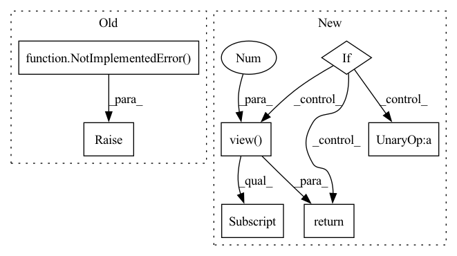

Pattern ID :32925
Before Change
if self.mode == "per_batch":
raise NotImplementedError()
elif self.mode == "per_example":
raise NotImplementedError()
elif self.mode == "per_channel":
raise NotImplementedError()
else:
raise Exception("Invalid mode")After Change
else:
raise Exception("Invalid mode/p_mode combination")
elif self.p_mode == "per_batch":
if self.mode == "per_batch":
batch_size = cloned_samples.shape[0]
num_channels = cloned_samples.shape[1]
cloned_samples = cloned_samples.view(
1 , batch_size * num_channels, cloned_samples.shape[2]
)
if not self.are_parameters_frozen:
self.randomize_parameters(cloned_samples, sample_rate)
perturbed_samples = self.apply_transform(cloned_samples, sample_rate)
perturbed_samples = perturbed_samples.view(
batch_size, num_channels, cloned_samples.shape[2]
)
return perturbed_samples
elif self.mode == "per_example":
if not self.are_parameters_frozen :
self.randomize_parameters(cloned_samples, sample_rate)
return self.apply_transform(cloned_samples, sample_rate)
elif self.mode == "per_channel":In pattern: SUPERPATTERN
Frequency: 3
Non-data size: 7
Instances Fragment ID: 95430160
Project Name: asteroid-team/torch-audiomentations
Commit Name: 042316421b72a3bff8168be9e8fdf324b233e22b
Time: 2020-10-27
Author: iver56@hotmail.com
File Name: torch_audiomentations/core/transforms_interface.py
M Class Name: BaseWaveformTransform
N Class Name: BaseWaveformTransform
M Method Name: forward(3)
N Method Name: forward(3)
M Parent Class: torch.nn.Module
N Parent Class: torch.nn.Module
M File Name: torch_audiomentations/core/transforms_interface.py
N File Name: torch_audiomentations/core/transforms_interface.py
M Start Line: 173
M End Line: 181
N Start Line: 116
N End Line: 195
Before Change
return X.Act(p.view([1] * (X.dim() - 1) + [3,]))
def quaternion(self, lietensor):
raise NotImplementedError( "quaternion not implemented yet")
@classmethod
def identity(cls, *args, **kwargs):
raise NotImplementedError("Instance has no identity.")After Change
def quaternion(self, lietensor):
To quaternion
X = lietensor.Exp() if self.on_manifold else lietensor
if self.lid == 1 or self.lid == 2: // X is SO3 or RxSO3 type
return LieTensor(X.tensor().view(-1, X.size()[-1])[:, 0:4] .view(X.size()[:-1] + (-1,)), ltype=SO3_type)
elif self.lid == 3 or self.lid == 4: // X is SE3 or Sim3 type
return LieTensor(X.tensor().view(-1, X.size()[-1])[:, 3:7].view(X.size()[:-1] + (-1,)), ltype=SO3_type)
@classmethod Fragment ID: 95430148
Project Name: pypose/pypose
Commit Name: 221c2e208acad211a1a5e6d62c8d0a8f4dc38505
Time: 2022-05-31
Author: futaimeng@gmail.com
File Name: pypose/lietensor/lietensor.py
M Class Name: LieType
N Class Name: LieType
M Method Name: quaternion(2)
N Method Name: quaternion(2)
M Parent Class:
N Parent Class:
M File Name: pypose/lietensor/lietensor.py
N File Name: pypose/lietensor/lietensor.py
M Start Line: 132
M End Line: 132
N Start Line: 133
N End Line: 140
Before Change
self.randomize_parameters(cloned_samples, sample_rate)
return self.apply_transform(cloned_samples, sample_rate)
elif self.mode == "per_channel":
raise NotImplementedError() // TODO
else:
raise Exception("Invalid mode")
else:After Change
if not self.are_parameters_frozen:
self.randomize_parameters(cloned_samples, sample_rate)
return self.apply_transform(cloned_samples, sample_rate)
elif cloned_samples.view(
batch_size * num_channels, 1 , cloned_samples.shape[2]
)
if not self.are_parameters_frozen :
self.randomize_parameters(cloned_samples, sample_rate)
perturbed_samples = self.apply_transform(cloned_samples, sample_rate)
perturbed_samples = perturbed_samples.view(
batch_size, num_channels, cloned_samples.shape[2]
)
return perturbed_samples
else:
raise Exception("Invalid mode")
else: Fragment ID: 95430153
Project Name: asteroid-team/torch-audiomentations
Commit Name: 5381f525146d60ecaa1daa052dc906e6df4bc801
Time: 2020-10-27
Author: iver56@hotmail.com
File Name: torch_audiomentations/core/transforms_interface.py
M Class Name: BaseWaveformTransform
N Class Name: BaseWaveformTransform
M Method Name: forward(3)
N Method Name: forward(3)
M Parent Class: torch.nn.Module
N Parent Class: torch.nn.Module
M File Name: torch_audiomentations/core/transforms_interface.py
N File Name: torch_audiomentations/core/transforms_interface.py
M Start Line: 191
M End Line: 194
N Start Line: 116
N End Line: 208